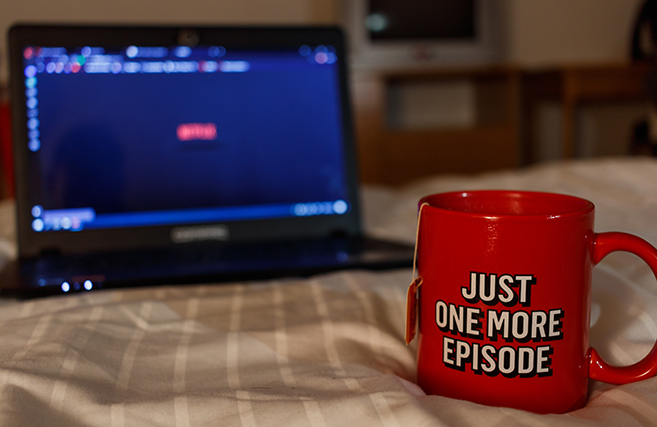

Reading

Books have been my friends these days. I love how a book tells a story because of the freedom it gives to my imagination. It is very interesting to see the diversity of events, emotions, places and characters. Compared to movies, series or visual novels, I like how books are very detailed and dives deeper into what's really happening. It is very compelling to read a character's emotions and be able to relate to them at some point. It also gives me an idea to multiple realities that I probably might never experience in real life. Learning new vocabularies is also a bonus!
Playing Instruments
I love instruments and who doesn't? Piano and ukelele are my two go-to instruments. I used to play ukelele because of it's nice sounds and simplicity. While it's been a year since I've started learning the basics of piano and I just fell in love with it. I've been trying to learn intermediate songs by myself but there definitely are a lot of room for improvements. I can say that learning instruments are definitely one of the best decisions I made!
Watching Series and Movies

This is definitely the reason why I'm nocturnal. I love to binge-watch every night that I must admit sometimes it's so exciting that I lose track of time. I like to explore on different genres but fantasies are definitely on my top list. I am also intrigue with dramatic plots that could make me cry buckets. I also absolutely adore character developments and I enjoy watching strong female characters.